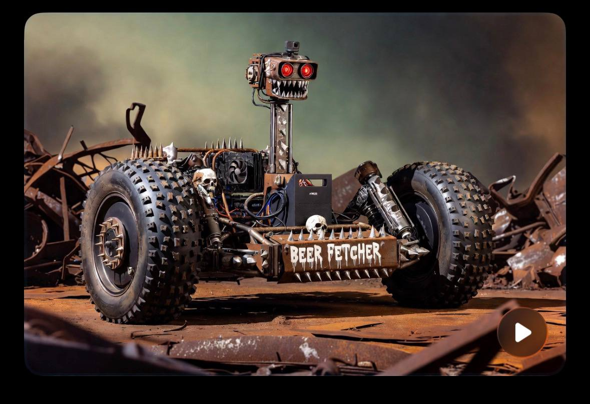

|
| [CAM-L] [CAM-R]
| \ /
| ====== <-- pan/tilt head
| ||||
| |||| <-- articulating mast
| ||||
______________________|______|______|______________________
/ | | | \
/ FORK | | | FORK \
| / | | | \ |
| / [============ SLING TRAY =============] \ |
| / [ RTX 4090 ][ ANKER C1000 ][ODrive] \ |
| / [===========================================] \ |
| / \ |
(O) (O)
29" 29"
HUB HUB
Autonomous Experiential Intelligence Machine
It learns. It roams. It fetches beer.
▼ scroll
// unit overview
AXIOM is a custom-built home robot designed to explore, learn, and improve itself over time. Not a toy. Not a kit. Fabricated from raw steel, powered by a desktop-class GPU, and guided by a local AI brain that gets smarter with every room it enters.
The frame is welded by hand — a low-slung open tray suspended between two 29" hub-drive wheels using an inverted fork geometry. The center of gravity hangs below the axle line, pendulum-style, making it naturally self-stabilizing even as the camera mast moves.
An articulating camera post rises from the tray, topped with two Intel RealSense D455 depth cameras on Dynamixel pan/tilt servos. AXIOM sees in 3D. It maps. It navigates. It logs everything it encounters and ships that data to a dedicated training server — which fine-tunes its own model and sends an updated brain back.
The end goal: a robot that knows your house better than you do. And brings you a cold one.

// hardware manifest
// compute
RTX 4090 + Intel 13th Gen
64GB RAM. Full desktop GPU onboard. Runs Qwen2.5-VL 7B locally via Ollama. No cloud. No latency. All intelligence is on-device.
// vision
Dual Intel RealSense D455
Active stereo depth, 6m range, 87° FOV, built-in IMU. One forward for navigation, one tilting for object interaction. Software depth processed on the 4090.
// pan/tilt head
Dynamixel XM430 Servos
Digital servos with position feedback, daisy-chain wiring. One axis pan, one axis tilt. Python-controlled via U2D2 USB interface.
// drive
Bafang 29" Hub Motors
Two complete 29" wheel assemblies, 250-350W each. Controlled by ODrive S1 over USB. Slow, torquey, and precise. This isn't a racing bot.
// power
Anker C1000
1000Wh portable power station. Clean, stable DC/AC output for the entire system. Mounted low in the sling tray as ballast and battery.
// frame
Custom Welded Steel
Inverted fork geometry. Open tray slung below the axle line — pendulum-stable by design. Hand-fabricated with a Lincoln Electric 210 MP MIG/TIG welder.
// brain
Qwen2.5-VL 7B (Multimodal)
Sees through the cameras and reasons about what it sees. Narrates experiences, plans navigation, logs everything. Fine-tuned continuously via LoRA.
// training server
RTX 6000 Ada (48GB ECC)
Dedicated workstation card. Ingests bot logs. Fine-tunes LoRA adapters via Unsloth + Axolotl. Pushes updated model back to the bot. The bot gets smarter over time.
// mission objectives
AXIOM isn't a product. It's a platform for building something that didn't exist before — a home robot that genuinely learns from its own experience. Not via telemetry to a server farm. Locally. On hardware you own. With a model that is yours.
The architecture is three-tiered: AXIOM handles real-time action on the 4090, a dedicated RTX 6000 Ada server handles training and business ops, and a cloud AI handles the heavy reasoning. Each tier does what it's best at.
Build the Brain
Assemble the compute stack. Get Ubuntu running. Validate the vision pipeline, motor control, and servo head. Write the first Python glue scripts. Make it move.
Fabricate the Frame
Mock up component layout. Design the inverted fork sling around the actual hardware footprint. Weld the frame. Mount everything. First autonomous movement.
Begin the Loop
Enable experience logging. Ship logs to the training server. First LoRA fine-tune. Push updated adapter to AXIOM. Watch it navigate better next week than it did this week.
Fetch the Beer
The real benchmark. Navigate to the fridge. Open it. Identify and retrieve a cold one. Deliver without spilling. This is the bar. Everything else is just progress toward it.
// field notes
2026-05-01
Project AXIOM — Initiated COMPLETE
Full hardware stack spec'd and locked. GPU, vision, servos, drive system, power, training server. Bill of materials drafted. Frame geometry concept finalized: inverted fork, pendulum sling, low CG design.
TBD
Compute Stack Assembly PLANNED
Source and assemble ITX build with 4090. Install Ubuntu. Validate GPU, run Ollama, test Qwen2.5-VL 7B inference.
TBD
Vision Pipeline Validation PLANNED
Mount dual RealSense D455. Wire Dynamixel servos via U2D2. Validate depth streams, pan/tilt control, camera fusion in Python.
TBD (post-move)
Frame Fabrication PLANNED
MIG weld the sling frame. Mount hub motors. First full rolling test. Begin integration of all subsystems into the physical chassis.
TBD
First Autonomous Navigation Run PLANNED
AXIOM moves through a room without human input. Logs the experience. Ships data to training server. Adapters updated. Loop begins.